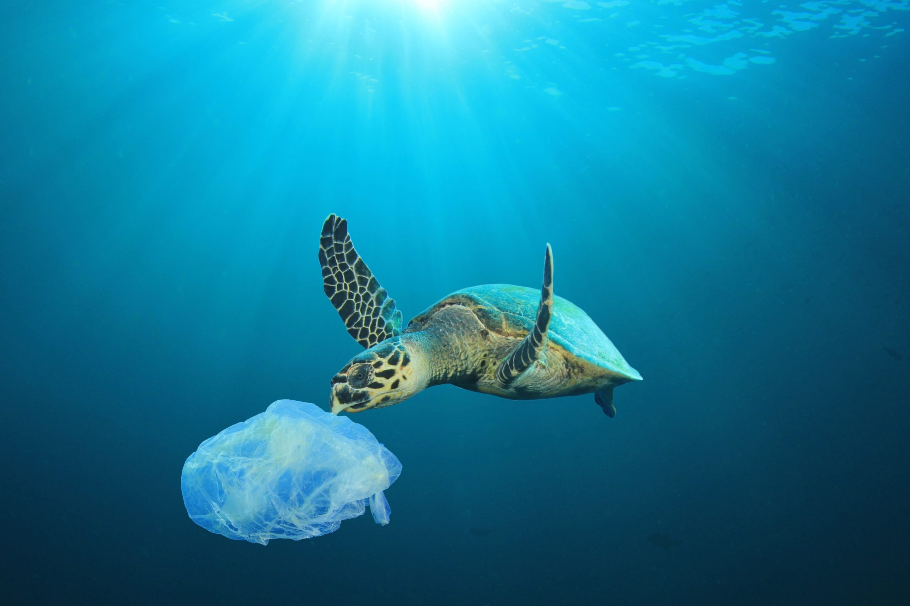
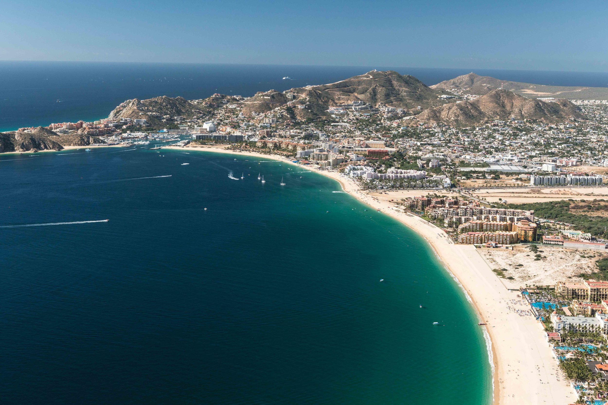
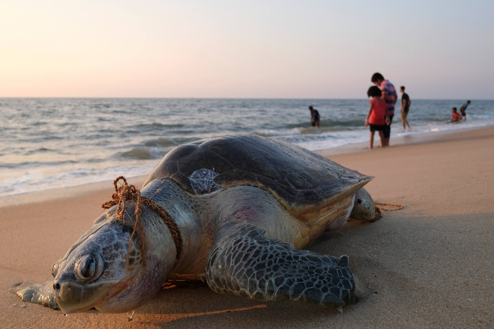

Threat 1: Pollution

- Pollution poses a significant threat to turtle populations. It can contaminate their habitats, affect their food sources, and lead to various health issues.
- Sea turtles can be harmed by marine pollution in a variety of ways. They are affected by plastic pollution, discarded fishing gear, petroleum byproducts, and other debris through ingestion and entanglement.
- Pollution in the ocean can also weaken turtle immune systems and disrupt nesting and hatchling behavior.
To prevent pollution, we should:
- Promote proper waste disposal
- Reduce the use of single-use plastics
- Raise awareness about the impact of pollution on turtles
Learn more about solutions and conservation efforts: Solutions
Threat 2: Habitat Loss
- Habitat loss is a major threat to turtles. It occurs due to urbanization, deforestation, and coastal development.
- Every year, sea turtle habitats are destroyed as coastlines recede. This loss of nesting beaches and feeding grounds can disrupt their life cycle and reproductive patterns.
To address habitat loss, we need to:
- Support protected areas
- Promote sustainable development practices
- Conserve nesting sites
Learn more about solutions and conservation efforts: Habitat Loss Solutions
Threat 3: Human Actions
- Illegal trade of turtles and their products is a grave threat to their survival. Poaching for their shells, meat, and eggs has led to a decline in many turtle species.
- Turtles are slaughtered and traded on the global market as exotic food, oil, leather, and jewelry.
To combat illegal trade, we need:
- Stricter law enforcement
- International cooperation
- Public awareness campaigns against the consumption and trade of turtle products
Learn more about solutions and conservation efforts: Illegal Trade Solutions